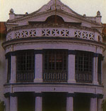
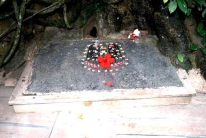
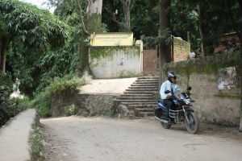
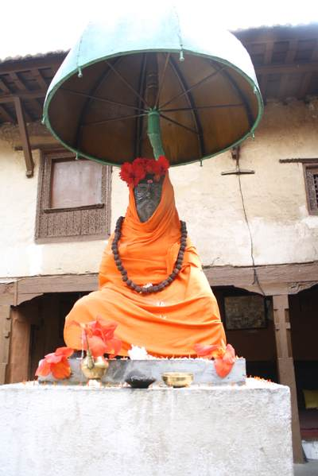

Sikh Temple, Kathmandu

The gurudwara was founded in 1976 by the Sikh sangat of Kathmandu. There are in all five historical Gurudwaras here. The most famous being "Nanak Math" situated on the bank of river Bishnumati. It is said that Guru Nanak Sahib actually stayed here for sometime and mediated at this serene sight. Community services include Sangat Langer on Saturday afternoons. There are about 400 members of the sikh community in the area.
Address: Kupandole, Kathmandu (Nepal)
The Forgotten Shrine of the Sikhs

Books on Kathmandu are silent about the shrine. It is not on the tourist map. No coaches park below the small forested hill by the river on the road to Balaju. The temple is left to bird song and the occasional visitor who either knows it is there or by chance comes upon the small weathered sign which says, “Guru Nanak Math” (27°43'31"N 85°18'19"E).
An arching stairway leads through trees and bamboo to the small building which from the outside looks like any Nepali farmhouse. The climb up the stairs is refreshing. The city, which now encroaches on the fields about the hill, is so screened by greenery that one can almost forget its existance. The busy sound of traffic trails further and further behind. Through openings in the trees can be seen the river and a high mountain. A small grassy clearing just before the house is just the kind of place a weary traveler would have welcomed. Cool. Quiet. Undisturbed.

A stone slab with two carved feet marking the spot where Guru Nanak lay in meditation at the shrine The doorway to the lime-washed house is plastered with ochre earth. The black painted door is small in the way of old Nepal, so one stoops to enter. In a verandah are steep stairs which we climb to enter into a small dark room. At the centre, under a canopy, is an altar draped in red.
Guru Nanak's shrine at Gurdawara Nanak Muth
It seems a Malla king of the early sixteenth century suffered a disturbed mind. His brothers, alarmed by his behaviour, banished him to India. Roaming forlornly through the holy city of Benaras he came upon the saint Guru Nanak and begged him to cure his affliction. After many visits and much beseeching, the guru advised the king to return to his kingdom where his health would be restored.
Miraculously, the saint preceded the king to Kathmandu for there he was, meditating under a pipal tree on a hill beside the river. The king visited him at once, begging the guru to return him to the palace. Guru Nanak refused to do so, saying that in this serene spot he had all he wanted. So the king had a temple built for his guru and a small shrine for himself where he often came to meditate. When the king died, some of his ashes were buried in the shrine according to his last wishes.
A later king, Rana Bahadur Shah, also of unsound mind, is said to have found solace at the Guru Nanak Math. He gifed considerable land to the temple so it might never want for support. Perhaps the records have long since perished because slowly the gurdwara lands have been encroached upon until only the hill remains. It would be tragedy if modern hungers consume the trees and push concrete within reach of the peaceful old building.
Obviously the lovely, lonely Guru Nanak Math is in need of a Sikh Scholar to unravel its truths and legends. Until then it will remain a half-forgotten temple on a wooded hill threatened by the brick and concrete advances of Kathmandu.